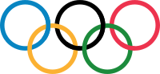

Sports Euphoria
Sports EuphoriaOlympics
 The modern Olympic Games (Greek: ???�p?a??? ????e?), (French: les Jeux olympiques, JO) are major international events featuring summer and winter sports in which thousands of athletes participate in a variety of competitions. The Olympic Games are considered to be the world's foremost sports competition with more than 200 nations participating The Games are currently held biennially, with Summer and Winter Olympic Games alternating, meaning they each occur every four years. Their creation was inspired by the ancient Olympic Games, which were held in Olympia, Greece, from the 8th century BC to the 4th century AD. Baron Pierre de Coubertin founded the International Olympic Committee (IOC) in 1894. The IOC has since become the governing body of theOlympic Movement, with the Olympic Charter defining its structure and authority. The evolution of the Olympic Movement during the 20th and 21st centuries has resulted in several changes to the Olympic Games. Some of these adjustments include the creation of the Winter Games for ice and winter sports, theParalympic Games for athletes with a disability, and the Youth Olympic Gamesfor teenage athletes. The IOC has had to adapt to a variety of economic, political, and technological advancements. As a result, the Olympics shifted away from pure amateurism, as envisioned by Coubertin, to allow participation of professional athletes. The growing importance of mass media created the issue of corporate sponsorship and commercialization of the Games. World wars led to the cancellation of the 1916, 1940, and 1944 Games. Large boycotts during the Cold War limited participation in the 1980 and 1984 Games.
Modern Games
Forerunners
Various uses of the term "Olympic" to describe athletic events in the modern era have been documented since the 17th century. The first such event was the Cotswold Games or "Cotswold Olimpick Games", an annual meeting near Chipping Campden, England, involving various sports. It was first organized by the lawyer Robert Dover between 1612 and 1642, with several later celebrations leading up to the present day. The British Olympic Association, in its bid for the 2012 Olympic Games in London, mentioned these games as "the first stirrings of Britain's Olympic beginnings". L'Olympiade de la R�publique, a national Olympic festival held annually from 1796 to 1798 inRevolutionary France also attempted to emulate the ancient Olympic Games. The competition included several disciplines from the ancient Greek Olympics. The 1796 Games also marked the introduction of the metric system into sport. In 1850 an Olympian Class was started by Dr. William Penny Brookes at Much Wenlock, inShropshire, England. In 1859, Dr. Brookes changed the name to the Wenlock Olympian Games. This annual sports festival continues to this day.[ The Wenlock Olympian Society was founded by Dr. Brookes on 15 November 1860 Between 1862 and 1867, Liverpool held an annual Grand Olympic Festival. Devised by John Hulley and Charles Melly, these games were the first to be wholly amateur in nature and international in outlook, although only 'gentlemen amateurs' could compete. The programme of the first modern Olympiad in Athens in 1896 was almost identical to that of the Liverpool Olympics. In 1865 Hulley, Dr. Brookes and E.G. Ravenstein founded the National Olympian Association in Liverpool, a forerunner of the British Olympic Association. Its articles of foundation provided the framework for the International Olympic Charter.[ In 1866, a national Olympic Games in Great Britain was organized at London's Crystal Palace.Changes and adaptations
After the success of the 1896 Games, the Olympics entered a period of stagnation that threatened their survival. The Olympic Games held at the Paris Exposition in 1900 and the World's fair at St. Louis in 1904 were side-shows. The Games at Paris did not have a stadium; but was notable for being the first time women took part in the Games. When the St. Louis Games were celebrated roughly 650 athletes participated, but 580 were from the United States. The homogeneous nature of these celebrations was a low point for the Olympic Movement.[41] The Games rebounded when the 1906 Intercalated Games (so-called because they were the second Games held within the third Olympiad) were held in Athens. These Games are not officially recognized by the IOC and no Intercalated Games have been held since. The Games attracted a broad international field of participants and generated great public interest. This marked the beginning of a rise in both the popularity and the size of the Olympics.Winter Games
The Winter Olympics was created to feature snow and ice sports that were logistically impossible to hold during the Summer Games. Figure skating (in 1908 and 1920) and ice hockey (in 1920) were featured as Olympic events at the Summer Olympics. The IOC desired to expand this list of sports to encompass other winter activities. At the 1921 Olympic Congress, in Lausanne, it was decided to hold a winter version of the Olympic Games. A winter sports week (it was actually 11 days) was held in 1924 in Chamonix, France, in connection with theParis Games held three months later; this event became the first Winter Olympic Games.[ Although the same country was originally intended to host both the Winter and Summer Games in a given year, this idea was quickly abandoned. The IOC mandated that the Winter Games be celebrated every four years on the same year as their summer counterpart. This tradition was upheld until the 1992 Games in Albertville, France; after that, beginning with the 1994 Games, the Winter Olympics were held every four years, two years after each Summer Olympics.
Paralympics
In 1948, Sir Ludwig Guttmann, determined to promote the rehabitation of soldiers after World War II, organized a multi-sport event between several hospitals to coincide with the 1948 London Olympics. Guttmann's event, known then as the Stoke Mandeville Games, became an annual sports festival. Over the next twelve years, Guttmann and others continued their efforts to use sports as an avenue to healing. For the 1960 Olympic Games, in Rome, Guttmann brought 400 athletes to compete in the "Parallel Olympics", which became known as the first Paralympics. Since then, the Paralympics have been held in every Olympic year. Since the 1988 Summer Olympicsin Seoul, South Korea, the host city for the Olympics has also played host to the Paralympics. In 2001 the International Olympic Committee (IOC) and the International Paralympic Committee (IPC) signed an agreement guaranteeing that host cities would be contracted to manage both the Olympic and Paralympic Games. The agreement came into effect at the 2008 Summer Games in Beijing, and the 2010 Winter Games in Vancouver. Chairman of the London organising committee, Lord Coe, said about the 2012 Summer Paralympics and Olympics in London that,
Recent games
From 241 participants representing 14 nations in 1896, the Games have grown to about 10,500 competitors from 204 nations at the2008 Summer Olympics. The scope and scale of the Winter Olympics is smaller. For example, Turin hosted 2,508 athletes from 80 nations competing in 84 events during the 2006 Winter Olympics. During the Games most athletes and officials are housed in theOlympic Village. This village is intended to be a self-contained home for all the Olympic participants, and is furnished with cafeterias, health clinics, and locations for religious expression.[ The IOC allowed the formation of National Olympic Committees representing nations that did not meet the strict requirements for political sovereignty that other international organizations demand. As a result, colonies and dependencies are permitted to compete at Olympic Games. Examples of this include territories such as Puerto Rico, Bermuda, and Hong Kong, all of which compete as separate nations despite being legally a part of another country. The current version of the Charter allows for the establishment of new National Olympic Committees to represent nation which qualify as "an independent State recognised by the international community".Therefore, it did not allow the formation of National Olympic Committees for Sint Maarten and Cura�ao when they gained the same constitutional status as Aruba in 2010, although the IOC had recognized the Aruban Olympic Committee in 1986.
International Olympic Committee
The Olympic Movement encompasses a large number of national and international sporting organizations and federations, recognized media partners, as well as athletes, officials, judges, and every other person and institution that agrees to abide by the rules of the Olympic Charter. As the umbrella organization of the Olympic Movement, theInternational Olympic Committee (IOC) is responsible for selecting the host city, overseeing the planning of the Olympic Games, updating and approving the sports program, and negotiating sponsorship and broadcasting rights. French and English are the official languages of the Olympic Movement. The other language used at each Olympic Games is the language of the host country (or languages, if a country has more than one official language apart from French or English). Every proclamation (such as the announcement of each country during the parade of nations in the opening ceremony) is spoken in these three (or more) languages, or the main two depending on whether the host country is an English or French speaking country.[
Criticism
The IOC has often been criticized for being an intractable organization, with several members on the committee for life. The presidential terms of Avery Brundage and Juan Antonio Samaranch were especially controversial. Brundage was president for over 20 years, and during his tenure he protected the Olympics from political involvement and the influence of advertising.[ He was accused of both racism, for his handling of the apartheid issue with the South African delegation, and antisemitism. Under the Samaranch presidency, the office was accused of both nepotism and corruption. Samaranch's ties with the Franco regime in Spain were also a source of criticism.[ In 1998, it was uncovered that several IOC members had taken bribes from members of the Salt Lake City bid committee for the hosting of the 2002 Winter Olympics. The IOC pursued an investigation which led to the resignation of four members and expulsion of six others. The scandal set off further reforms that changed the way host cities were selected, to avoid similar cases in the future.Commercialization
The IOC originally resisted funding by corporate sponsors. It was not until the retirement of IOC president Avery Brundage, in 1972, that the IOC began to explore the potential of the television medium and the lucrative advertising markets available to them. Under the leadership of Juan Antonio Samaranch the Games began to shift toward international sponsors who sought to link their products to the Olympic brand.[81]Budget
During the first half of the 20th century the IOC ran on a small budget. As president of the IOC from 1952 to 1972, Avery Brundage rejected all attempts to link the Olympics with commercial interest, Brundage believed the lobby of corporate interests would unduly impact the IOC's decision-making.[ Brundage's resistance to this revenue stream meant the IOC left organizing committees to negotiate their own sponsorship contracts and use the Olympic symbols. When Brundage retired the IOC had US$2 million in assets; eight years later the IOC coffers had swelled to US$45 million. This was primarily due to a shift in ideology toward expansion of the Games through corporate sponsorship and the sale of television rights[ When Juan Antonio Samaranch was elected IOC president in 1980 his desire was to make the IOC financially independent.[ The 1984 Summer Olympics became a watershed moment in Olympic history. The Los Angeles-based organizing committee, led byPeter Ueberroth, was able to generate a surplus of US$225 million, which was an unprecedented amount at that time. The organizing committee had been able to create such a surplus in part by selling exclusive sponsorship rights to select companies.The IOC sought to gain control of these sponsorship rights. Samaranch helped to establish The Olympic Program (TOP) in 1985, in order to create an Olympic brand.[ Membership in TOP was, and is, very exclusive and expensive. Fees cost US$50 million for a four-year membership. Members of TOP received exclusive global advertising rights for their product category, and use of the Olympic symbol, the interlocking rings, in their publications and advertisements
Controversy
The sale of the Olympic brand has been controversial. The argument is that the Games have become indistinguishable from any other commercialized sporting spectacle. Specific criticism was levelled at the IOC for market saturation during the 1996 Atlanta and 2000 Sydney Games. The cities were awash in corporations and merchants attempting to sell Olympic-related wares. The IOC indicated that they would address this to prevent spectacles of over-marketing at future Games.[ Another criticism is that the Games are funded by host cities and national governments; the IOC incurs none of the cost, yet controls all the rights and profits from the Olympic symbols. The IOC also takes a percentage of all sponsorship and broadcast income. Host cities continue to compete ardently for the right to host the Games, even though there is no certainty that they will earn back their investments. Research has shown that trade is around 30 percent higher for countries that have hosted the Olympics. However, this research also finds that unsuccessful bids to host the Olympics have a similar positive impact on exports, perhaps indicating that the Olympic effect on trade is attributable to the signal a country sends when bidding to host the games, rather than the act of actually holding a mega-event.
Cost
The cost of the Olympic Games (Summer and Winter) have been studied by Oxford scholars Bent Flyvbjerg and Allison Stewart They found that over the past 50 years the most costly Games have been London 2012 ($14.8 billion), Barcelona 1992 ($11.4 billion), and Montreal 1976 ($6 billion). Beijing 2008 may rank in the top three but Chinese authorities have not released the data that would allow verification. Cost here includes only sports-related costs and security and thus does not include other public costs, such as road, rail, or airport infrastructure, or private costs, such as hotel upgrades or other business investments incurred in preparation of the Games, which are typically substantial but which vary drastically from city to city and are difficult to compare consistently. Finally, Flyvbjerg and Stewart found that over the past decade, cost overrun for the Games has come down to more common levels for megaprojects. For the period 2000�2010 average cost overrun was 47%, whereas before that the average overrun was 258%. However, London 2012 has reversed this trend with a cost overrun at 101%. Flyvbjerg and Stewart conclude that the challenge for planners and managers of the Games will be to get costs and overruns back under control, and to reduce them further.Symbols
The Olympic Movement uses symbols to represent the ideals embodied in the Olympic Charter. The Olympic symbol, better known as the Olympic rings, consists of five intertwined rings and represents the unity of the five inhabited continents (Africa, America, Asia, Australia, Europe). The colored version of the rings�blue, yellow, black, green, and red�over a white field forms the Olympic flag. These colors were chosen because every nation had at least one of them on its national flag. The flag was adopted in 1914 but flown for the first time only at the 1920 Summer Olympics in Antwerp, Belgium. It has since been hoisted during each celebration of the Games. The Olympic motto is Citius, Altius, Fortius, a Latin expression meaning "Faster, Higher, Stronger". Coubertin's ideals are further expressed in the Olympic creed: The most important thing in the Olympic Games is not to win but to take part, just as the most important thing in life is not the triumph but the struggle. The essential thing is not to have conquered but to have fought well.[102] Months before each Games, the Olympic Flame is lit in Olympia in a ceremony that reflects ancient Greek rituals. A female performer, acting as a priestess, ignites a torch by placing it inside a parabolic mirror which focuses the sun's rays; she then lights the torch of the first relay bearer, thus initiating the Olympic torch relay that will carry the flame to the host city's Olympic stadium, where it plays an important role in the opening ceremony.[103] Though the flame has been an Olympic symbol since 1928, the torch relay was introduced at the 1936 Summer Games, as part of the German government's attempt to promote its National Socialist ideology.
Ceremonies
Opening
As mandated by the Olympic Charter, various elements frame the opening ceremony of the Olympic Games. Most of these rituals were established at the 1920 Summer Olympics in Antwerp[ The ceremony typically starts with the hoisting of the host country's flag and a performance of its national anthem. The host nation then presents artistic displays of music, singing, dance, and theater representative of its culture. The artistic presentations have grown in scale and complexity as successive hosts attempt to provide a ceremony that outlasts its predecessor's in terms of memorability. The opening ceremony of the Beijing Games reportedly cost $100 million, with much of the cost incurred in the artistic segment.Closing
The closing ceremony of the Olympic Games takes place after all sporting events have concluded. Flag-bearers from each participating country enter the stadium, followed by the athletes who enter together, without any national distinction. Three national flags are hoisted while the corresponding national anthems are played: the flag of the current host country; the flag of Greece, to honor the birthplace of the Olympic Games; and the flag of the country hosting the next Summer or Winter Olympic Games.The president of the organizing committee and the IOC president make their closing speeches, the Games are officially closed, and the Olympic flame is extinguished. In what is known as the Antwerp Ceremony, the mayor of the city that organized the Games transfers a special Olympic flag to the president of the IOC, who then passes it on to the mayor of the city hosting the next Olympic GamesThe next host nation then also briefly introduces itself with artistic displays of dance and theater representative of its culture.Medal presentation
A medal ceremony is held after each Olympic event is concluded. The winner, second and third-place competitors or teams stand on top of a three-tiered rostrum to be awarded their respective medals. After the medals are given out by an IOC member, the national flags of the three medalists are raised while the national anthem of the gold medalist's country plays. Volunteering citizens of the host country also act as hosts during the medal ceremonies, as they aid the officials who present the medals and act as flag-bearers.[ For every Olympic event, the respective medal ceremony is held, at most, one day after the event's final. For the men's marathon, the competition is usually held early in the morning on the last day of Olympic competition and its medal ceremony is then held in the evening during the closing ceremony.Sports
The Olympic Games program consists of 35 sports, 30 disciplines and nearly 400 events. For example, wrestling is a Summer Olympic sport, comprising two disciplines: Greco-Roman and Freestyle. It is further broken down into fourteen events for men and four events for women, each representing a different weight class[ The Summer Olympics program includes 26 sports, while the Winter Olympics program features 15 sports. Athletics, swimming, fencing, and artistic gymnastics are the only summer sports that have never been absent from the Olympic program. Cross-country skiing, figure skating, ice hockey, Nordic combined, ski jumping, and speed skatinghave been featured at every Winter Olympics program since its inception in 1924. Current Olympic sports, like badminton, basketball, and volleyball, first appeared on the program as demonstration sports, and were later promoted to full Olympic sports. Some sports that were featured in earlier Games were later dropped from the program.[ Olympic sports are governed by international sports federations (IFs) recognized by the IOC as the global supervisors of those sports. There are 35 federations represented at the IOC. There are sports recognized by the IOC that are not included on the Olympic program. These sports are not considered Olympic sports, but they can be promoted to this status during a program revision that occurs in the first IOC session following a celebration of the Olympic Games During such revisions, sports can be excluded or included in the program on the basis of a two-thirds majority vote of the members of the IOC.[ There are recognized sports that have never been on an Olympic program in any capacity, including chess and surfing.
Champions and medalists
The athletes or teams who place first, second, or third in each event receive medals. The winners receive gold medals, which were solid gold until 1912, then made of gilded silver and now gold-plated silver. Every gold medal however must contain at least six grams of pure gold. The runners-up receive silver medals and the third-place athletes are awarded bronze medals. In events contested by a single-elimination tournament (most notably boxing), third place might not be determined and both semifinal losers receive bronze medals. At the 1896 Olympics only the first two received a medal; silver for first and bronze for second. The current three-medal format was introduced at the 1904 Olympics. From 1948 onward athletes placing fourth, fifth, and sixth have received certificates, which became officially known as victory diplomas; in 1984 victory diplomas for seventh- and eighth-place finishers were added. At the 2004 Summer Olympics in Athens, the gold, silver, and bronze medal winners were also given olive wreaths. The IOC does not keep statistics of medals won, but National Olympic Committees and the media record medal statistics as a measure of success.